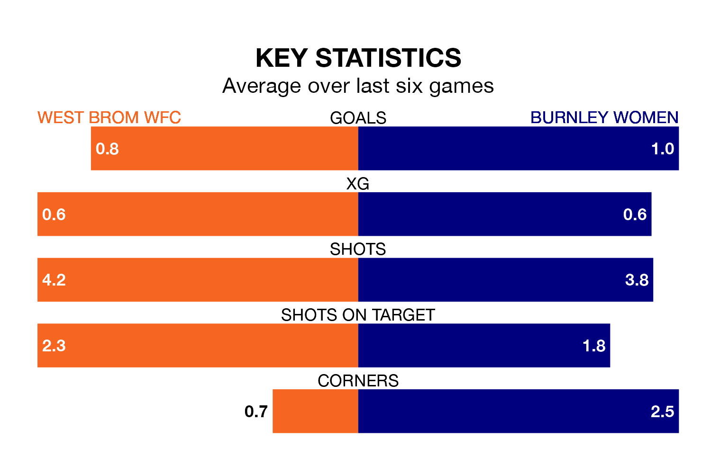

West Brom WFC face Burnley Women on Sunday seeking to protect their long unbeaten run in the Women's National League Premier Division North.
West Brom WFC are unbeaten in six, with three wins and three draws, ahead of the 2.15pm kick-off.
They face a Burnley team who have won two and drawn two over the same number of games.
With 28 goals in 13 games so far this season, Burnley are scoring more than average in the league with 2.2 goals per game. And they are conceding fewer than average, letting in 13 goals at a rate of 1.0 per game.
West Brom WFC, meanwhile, are below average scorers, with 1.3 goals per game, compared to a league average of 1.7. They have conceded 1.7 goals per game.
The visitors are third in the table after 13 games, of which they have won eight and drawn three, earning 27 points.
The home team are three places behind Burnley in sixth, with five wins and four draws putting them on 19 points.
In the last five years, West Brom WFC and Burnley have played each other on five occasions. West Brom WFC won one of them, Burnley three, and they drew once.
On average, West Brom WFC scored 1.6 goals and Burnley 3.6 in those matches.
Their last meeting was on November 5, when Burnley won 3-1 at home.
West Brom WFC's last match was on March 3, a 2-1 win against Huddersfield Town Women.
Burnley beat Derby County Women 2-0 last time out, also on March 3.
Updated: 09:34 (UTC), 08/03/24